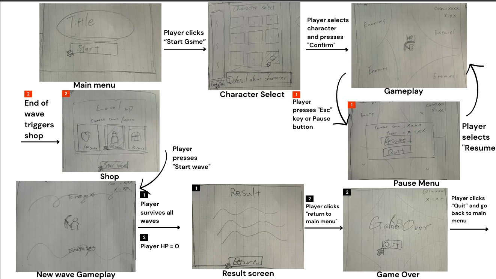

This is a trimmed version of Team 8's Cycle 2 Mini-Game Design Document for Hollowstead, written collaboratively by the full eight-person team under the working title “Demontide Cleansing.” My own role on the project — charm/skill idea design and its coding implementation — is documented separately in the Scrum Progress Reports.
Game Overview
Hollowstead (referred to as “Demontide Cleansing” throughout this design document) is a 2D top-down, rogue-lite survival game set in a high-fantasy medieval world. The player must endure escalating waves of enemies through a high-action gameplay loop that rewards both skill, strategy and creative itemisation. Survival depends on the effective use of item combinations, charms, magical familiars, and stat-based upgrades. Enemies present a growing obstacle to the player's chance of victory: a myriad of enemies, each sporting distinct abilities and behaviours designed to challenge the player. As enemy strength increases over the length of the game, the player is given opportunities to grow in parallel, utilising a system of experience points, gold, a collection of charms and their trusty magical familiars to enhance their capabilities. The game builds toward a climactic encounter with a final boss and their powerful horde.
Gameplay and Core Mechanics
Game objectives: the key objective is to eliminate enemy waves during the night, acquiring rewards such as gold, experience points and other boons through defeating enemies and completing side quests, in order to acquire upgrades — skills, equipment, and charms, collectively known as items — and progress to the next stage. Players fight during the night and rest during a grace period in the daytime, using a shop mechanic to prepare for the next battle.
Enemy waves span three categories: common enemies (simple, strength in numbers), elite enemies (more durable, interspersed threats), and major enemies (boss-type enemies at the end of rounds or from side quests, offering a greater reward).
Core challenges: surviving to the end of each round using positioning, dodging, and mouse-aimed attacks, while avoiding being overwhelmed and keeping a path of escape — a familiar tension from the survivor genre, sharpened further once boss-type enemies are introduced.
Core mechanics available to the player:
- Main weapon — an always-active ability that attacks in the direction of the cursor. Damage and attack-speed stats scale its effectiveness; the first playable character has an area-of-effect slashing attack.
- Movement — the player's freedom of movement on the map.
- Upgrades — items and skills that increase stats or grant boon effects. Charms can be upgraded and evolved through specific combinations into new, stronger charms.
Rewards: coins (gold), spent in the day-phase shop to acquire new effects or stats, and Exp, which fills a bar to level the player up mid-combat, increasing stats and unlocking new upgrades at certain thresholds — reinforcing the “power-fantasy” player-experience goal.
Penalties: the player loses hit points on contact with enemies or their projectiles, then enters a brief invincibility window (“I-frames”). Reaching zero HP ends the run, with all gold, items, experience, and upgrades lost, and returns the player to a game-over screen.
Player Capabilities & Game Objects
The player uses WASD to move and attacks automatically on a timer (attack speed) toward the cursor. The table below is an excerpt from the object/attribute balance sheet used to tune the Cycle 2 prototype.
| Object | Attribute | Value | Notes |
|---|---|---|---|
| Player Character | Health | 100 | Moves freely with WASD |
| Movement Speed | 2 | Increases up to 4 via upgrades | |
| Enemy (Goblin) | Health | 50 | Targets and follows the player |
| Movement Speed | 1 | ||
| Damage Dealt | 5 | ||
| Player Weapon | Attack Speed | 1.75 | Decreases to 0.5 with level-ups |
| Damage Dealt | 30 | ||
| Enemy Spawner (Easy) | Spawn Rate | 5 |
Potential and Planned Game Designs
Planned enemy behaviours explored movement patterns beyond simple chasing: zigzagging (sharp diagonal, alternating direction), sine-wave (smooth wave-like gliding), and swirl (looping, circular paths) — each meant to test player timing and aim differently on elite/major-tier enemies.
Planned player abilities included a Dash/Dodge (Shift, brief invincibility), a class-tied Basic Ability (E, cooldown-based), an Ultimate Ability (Q, high-impact, cooldown or combat-charged), and Active Items (number keys, mana-gated). Charms were planned around an evolution mechanic, combining sets of charms into stronger new ones. Familiars would assist the player with their own abilities and progression, selectable at the run's start. Side quests would reward optional objectives, and environmental locales (quest-giver, familiar-trainer, etc.) were discussed as future expansions of the day-phase shop.
The player-experience goal balanced three pillars: power-fantasy (crushing waves of enemies once sufficiently upgraded), challenge (an escalating difficulty curve via enemy tiers), and creativity (crafting a rogue-lite build from the available charms). Simplifying the main-weapon input — an attack-speed timer instead of a click-to-attack — was a deliberate choice to let players focus on positioning and itemisation instead of input repetition.
Interface / Visual System Details
Two UI directions were prototyped: one prioritising information clarity (surfacing more of the game's mechanics on screen) and one prioritising visual clarity (minimal HUD, less clutter). Both were shown to playtesters to gather a preference and specific feedback on details like health-bar placement.
The core UI included a numerical health bar (visually depleting on damage, without resizing as max HP grows), a round/night timer, a sidebar for details like active side quests, and a HUD showing cooldowns for class abilities and acquired items.
Two menus were planned: a Main Menu (Start / Options / Quit) and a Pause Menu (Esc to open, fades the background, shows current score, offers Resume or Exit-to-Menu). Additional screens: an Inventory screen (I key), a Shop screen (opens automatically after each wave), a Level Up screen (opens on reaching max Exp, offering one free pick), a Results screen (on surviving all waves), and a Game Over screen (on reaching 0 HP) — both showing run stats and a return-to-menu option.

Glossary
- Charms — the game's vanilla upgrade item, granting a unique effect (e.g. a constant damaging area around the player) rather than a raw stat.
- Equipment — equippable armour pieces (helmet, chest, legs, boots) that influence stats more directly than charms.
- Familiars — magical pets that help defeat enemies, with their own upgrades and abilities, not directly controlled by the player.
- Skills — activatable abilities. Class-tied skills are called abilities; Dash is a general skill always available regardless of class or item.